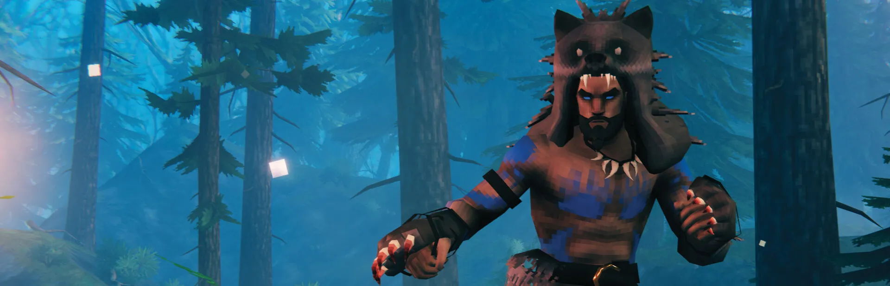

Valheim Guide: Progression, Bosses & Survival
Complete guides for Valheim progression, boss strategies, biomes, gear upgrades, building and survival — all player-tested, updated for 2026.

🗺️ Start Your Valheim Journey
Not sure what to do next? Follow the complete progression path from your first shelter to the final boss.
🧭 Where Are You In Your Journey?
Pick your stage — we have guides for every part of the Valheim adventure.
Just Started
Learn basic survival, tools, food and first shelter. Your first hours in Valheim, step by step.
Beginner Walkthrough →Preparing For Bosses
Find boss order, summoning requirements, attack patterns and winning strategies for all 7 Forsaken bosses.
Boss Progression Order →Exploring Biomes
Discover new biomes, find rare resources, and unlock crafting upgrades. From Swamp to Ashlands.
Complete Biome Guide →End Game
Prepare for Mistlands, Ashlands and the final challenges. Endgame gear, magic systems, and boss strategies.
Ashlands Guide →📚 Core Guide Areas
35+ in-depth guides across 6 categories. Every article verified in-game for the latest Valheim patch.
Progression Hub
Follow the complete Valheim journey. Biome order, boss sequence, gear upgrades — all in one roadmap.
Start Your Journey →Boss Guides
All 7 Forsaken bosses — individual deep-dive guides with summoning, attack patterns, weaknesses, and strategies.
View all 8 guides →Biomes & World
Every biome from Meadows to Deep North, sailing mechanics, trader locations, base locations and farming systems.
View all 6 guides →Weapons & Armor
Best weapons tier list ranked by biome, all 16 armor sets compared with stats and set bonuses. Find the best gear.
View all guides →Food & Crafting
40+ food recipes with HP/Stamina/Eitr stats. Cauldron upgrades, mead brewing, Stone Oven baking, and best food combos.
View all guides →Building & Base
Base building with structural integrity explained. Workshop layouts, portal networks, defense designs and dock building.
View all guides →🔥 Popular Guides
The guides players use most to progress through Valheim.
🆕 Latest Guides
Recently added and updated for the latest Valheim version.
🛡️ Practical Valheim Guides
Built around real gameplay, not copied wiki pages.
❓ Quick Answers
I just started Valheim. What should I do first?
Where should I build my first real base?
When am I ready to fight Eikthyr?
What should I do after beating Eikthyr?
What are the best weapons in Valheim?
What are common beginner mistakes to avoid?
Was this page helpful?